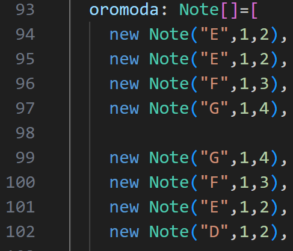
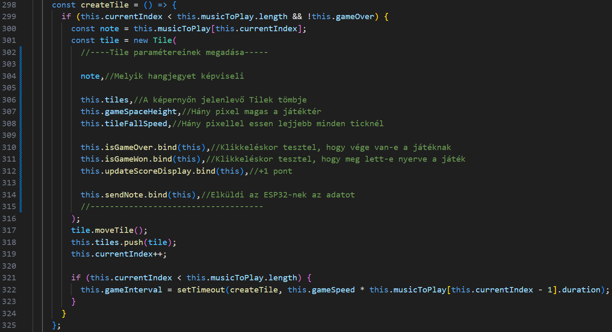

Document
Mi is az a Robotofon?
-Automatizált metalofon
-Kötelező iskolai munkaként indult
Miért jó?
Miért egy jó projekt számomra?
Sok tapasztalatot szereztem az:
-ESP32,
-Angular,
-Modellezés,
-3D nyomtatás terén
Miért jó a projekt az emberek számára?
-Szórakoztató
-Motiválja a gyermekeket
-Különleges tanulási élmény
Funkciók bemutatása
Hangzápor:
Távirányító:
Zenedoboz:
A hardverről
-Autodesk Fusion

-3D nyomtatás
-Hardver fejlesztése a jövőben
Kihívások és megoldásaik
-Miért bluetooth?
-Szervó problémák
-Modellezési hibák
Kódrészlet bemutatása


A szoftver fejlesztése
-Saját kotta írása, feltöltése
-Végtelen dallam generálás
-Yousicianhez hasonló gyakorlóprogram
A videó megtalálható a https://yousician.com oldalon
A prezentációról röviden
-Saját határaim feszegetése
-Saját könyvtár létrehozása
-Szabadság